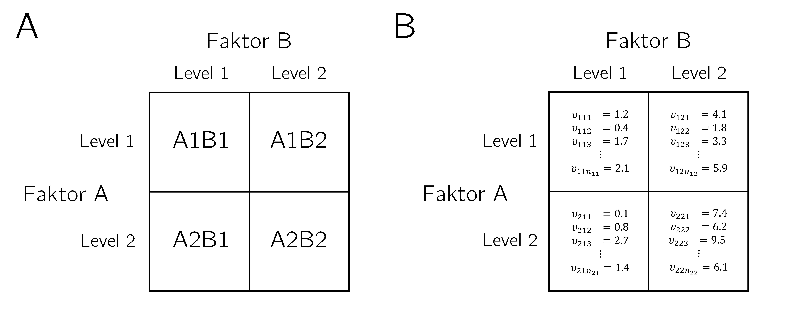
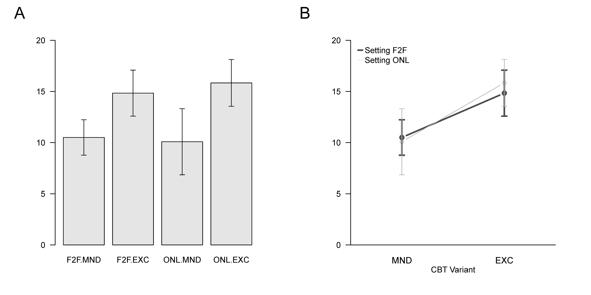

| Setting | Variant | dBDI |
|---|---|---|
| F2F | MND | 12 |
| F2F | MND | 11 |
| F2F | MND | 8 |
| F2F | MND | 8 |
| F2F | MND | 12 |
| F2F | MND | 12 |
| F2F | MND | 9 |
| F2F | MND | 10 |
| F2F | MND | 12 |
| F2F | MND | 13 |
| F2F | MND | 10 |
| F2F | MND | 9 |
| F2F | EXC | 14 |
| F2F | EXC | 11 |
| F2F | EXC | 15 |
| F2F | EXC | 16 |
| F2F | EXC | 15 |
| F2F | EXC | 19 |
| F2F | EXC | 16 |
| F2F | EXC | 14 |
| F2F | EXC | 11 |
| F2F | EXC | 15 |
| F2F | EXC | 15 |
| F2F | EXC | 17 |
| ONL | MND | 4 |
| ONL | MND | 10 |
| ONL | MND | 12 |
| ONL | MND | 13 |
| ONL | MND | 12 |
| ONL | MND | 12 |
| ONL | MND | 13 |
| ONL | MND | 10 |
| ONL | MND | 10 |
| ONL | MND | 13 |
| ONL | MND | 4 |
| ONL | MND | 8 |
| ONL | EXC | 16 |
| ONL | EXC | 19 |
| ONL | EXC | 14 |
| ONL | EXC | 17 |
| ONL | EXC | 17 |
| ONL | EXC | 16 |
| ONL | EXC | 13 |
| ONL | EXC | 16 |
| ONL | EXC | 20 |
| ONL | EXC | 13 |
| ONL | EXC | 16 |
| ONL | EXC | 13 |
33 Zweifaktorielle Varianzanalyse
33.1 Anwendungsszenario
Das klassische Anwendungsszenario einer zweifaktoriellen Varianzanalyse (ZVA) ist ein randomisiertes zweifaktorielles vollständig gekreuztes Studiendesign bestehend aus einer univariaten abhängige Variable bestimmt an randomisierten experimentellen Einheiten und zwei unabhängigen Variablen, die in der Regel jeweils mindestens zweistufig sind. Im Kontext der Varianzanalyse werden die unabhängigen Variablen bekanntlich auch Faktoren und ihre Ausprägungsstufen Faktorlevel genannt. Im Falle eines vollständig gekreuzten Designs wird jedes Level eines Faktors mit allen Level des anderen Faktors kombiniert. Die Kombination zweier spezifischer Faktorlevel wird dann auch Zelle des Designs genannt. Da den Zellen eines ZVA Designs üblicherweise Gruppen von experimentellen Einheiten zugeordnet werden, werden sie auch oft Gruppen oder experimentelle Bedingungen genant.
Spezielle zweifaktorielle Studiendesigns werden üblicherweise anhand ihrer Faktorlevel bezeichnet. Ein \(I \times J\) Studiendesign und seine entsprechende \(I \times J\) zweifaktorielle Varianzanalyse impliziert also, dass \(I\) Faktorlevel des ersten Faktors, im Folgenden als Faktor A bezeichnet, mit \(J\) Faktorleveln des zweiten Faktors, im Folgenden als Faktor \(B\) bezeichnet, gekreuzt werden. Folgende Tabelle gibt für einige der möglichen ZVA Designs die Bezeichnung und die Level der jeweiligen Faktoren an.
Generell sind \(2 \times 2\) ZVA Designs sehr populär und ermöglichen es, die wesentlichen Charakteristika zweifaktorieller Varianzanalysedesigns zu diskutieren. Wir fokussieren im Folgenden daher weitgehend auf diesen Fall. In Abbildung 33.1 A visualisieren wir das konzeptuelle Design einer \(2 \times 2\) ZVA, wobei wir die Zellen des Designs hier und im Folgenden mit A1B1, A1B2, A2B1 und A2B2 bezeichnen.
Abbildung 33.1 B visualisiert, dass zu jeder Zelle des Designs eine Gruppen von Datenpunkten korrespondiert. Wir nutzen dabei folgende Indexkonvention: \(y_{ijk}\) bezeichnet den Datenwert der \(k\) ten experimentellen Einheit im \(i\) ten Level von Faktor A und \(j\) ten Level von Faktor B, wobei \(k=1, \ldots, n_{ij}\) und im vorliegenden Fall \(i=1,2\) sowie \(j=1,2\). Ist die Anzahl an Datenwerten \(n_{ij}\) in jeder Zelle identisch, so spricht man wiederrum von einem balancierten Design.
Haupteffekte und Interaktionen
Intuitiv ist man in ZVA Designs an Haupteffekten und Interaktionen interessiert, die sich zunächst rein deskriptiv auf das Muster der zellspezifischen Gruppenmittelwerte beziehen.

Für den Fall einer \(2 \times 2\) ZVA spricht man dabei intuitiv vom Vorliegen eines Haupteffekts von Faktor A, wenn sich die Gruppenmittelwerte zwischen Level 1 und Level 2 von Faktor A, jeweils gemittelt über die zwei Level von Faktor B, unterscheiden. Weiterhin spricht man vom Vorliegen eines Haupteffekts von Faktor B, wenn sich die Gruppenmittelwerte zwischen Level 1 und Level 2 von Faktor B, jeweils gemittelt über die zwei Level von Faktor A, unterscheiden.
Vom Vorliegen einer Interaktion der Faktoren \(A\) und \(B\) schließlich spricht man, wenn der Unterschied der Gruppenmittelwerte von Faktor A zwischen Level 1 und 2 unterschiedlich für Level 1 und Level 2 von Faktor B ausgeprägt ist bzw. wenn der Unterschied der Gruppenmittelwerte von Faktor B zwischen Level 1 und 2 unterschiedlich für Level 1 und Level 2 von Faktor A ausgeprägt ist.
Haupteffekte beziehen sich intuitiv also auf (marginale) Unterschiede (Differenzen), während sich Interaktionen auf Unterschiede von Unterschieden (Differenzen von Differenzen) beziehen. Dabei besagt das Vorliegen einer Interaktion also lediglich, dass sich die Unterschiede der Gruppenmittelwerte zwischen den Leveln eines experimentellen Faktors in Abhängigkeit von den Leveln des anderen experimentellen Faktors ändern, impliziert aber keine Aussage darüber, warum dies so ist. In anderen Worten sind Haupteffekte und Interaktionen bei Varianzanalysen Datenmuster, aber keine wissenschaftlichen Theorien. Die frequentitistisch-inferenzstatistische Absicherung dieser Datenmuster ist das Thema dieses Kapitels.
Anwendungsbeispiel
Für ein konkretes Anwendungsbeispiel aus dem Bereich der Interventionsevaluation betrachten wir eine BDI-Pre-Postinterventionsdifferenzwertanalyse für je zwei Settings (Face-to-Face und Online) und Varianten (Mindfulness und Exercise) der kognitiven Verhaltenstherapie (CBT, Abbildung 38.1). Setting sei Faktor (A) mit Leveln (1) Face-to-face (F2F) und (2) Online (ONL) und Variante sei Faktor (B) mit Leveln (1) Mindfulness (MND) und (2) Exercise (EXC). Jeder der durch Kreuzung der Faktorlevel entstehenden Interventionsbedingungen sei eine Gruppe (Stichprobe) von \(n_{ij}:=12\) Patient:innen zugeordnet und für jede Patient:in sei die Differenz zwischen Preinterventions und Postinterventions BDI Wert bestimmt worden und mit dBDI bezeichnet.

Tabelle 33.1 zeigt einen Beispieldatensatz. Dabei repräsentiert jede Zeile eine Patient:in, die Spalte Setting bezeichnet das dieser Patient:in entsprechende Level des Therapiesettingfaktors und die Spalte Variant das dieser Patient:in entsprechende Level des Therapievariantenfaktors. Der entsprechende dBDI Zeilenwert bildet den Pre-Post-InterventionsBDI-Differenzwert der entsprechenden Patient:in ab. Hohe Werte zeigen dabei eine starke Verbesserung, geringe Werte eher eine leichte Verbesserung der Depressionssymptomatik an.
Abbildung 33.3 schließlich zeigt zwei häufig genutzte Visualisationsformen für Deskriptivstatistiken (hier Gruppenmittelwerte und Standardabweichungen) in \(2 \times 2\) ZVA Szenarien. Abbildung 33.3 A zeigt die faktorlevelkombinationsspezifischen Gruppenmittelwerte und ihre Standardabweichungen als Balkendiagramm. Abbildung 33.3 B zeigt die gleichen Daten als Liniendiagramm mit Fehlerbalken. Dabei entsprechen die zwei Linien den beiden Leveln des Settingfaktors F2F (dunkelgraue Linie) und ONL (hellgraue Linie). Die auf der x-Achse abgetragenen Werte dagegen entsprechen den beiden Leveln des Variantenfaktors MND und EXC. Für das Verständnis dieser Art der Visualisierung ist es sicherlich hilfreich, die Korrespondenz zwischen den in Abbildung 33.3 A und Abbildung 33.3 B einmal explizit durch nachzeichnen herzustellen.

33.2 Modellformulierung
Um nun den Spezialfall des ALMs für das ZVA Szenario zu diskutieren, gehen wir in zwei Schritten vor. In einem ersten Schritt führen mit dem Modell der additiven ZVA ein Modell ein, das lediglich die Haupteffekte der Faktoren, nicht aber ihre Interaktion modellieren kann. Entsprechend können auf Grundlage dieses Modells Haupteffektparameter geschätzt und inferenzstatistisch evaluiert werden. In einem zweiten Schritt führen wir mit dem Modell der ZVA mit Interaktion ein Modell ein, das sowohl die Haupteffekte der Faktoren als auch ihre Interaktion modelliert und auf dessen Grundlage entsprechend sowohl Haupteffekts- als auch Interaktionsparameter geschätzt und inferenzstatistisch evaluiert werden können. In beiden Fällen ist das zentrale Thema der Modellformulierung wie bei der EVA von einer Intuition zur Modellierung der Erwartungswertparameter der Zellen des ZVA Szenarios zu einer nicht überparameterisierten Darstellung mithilfe von Effektparametern zu kommen.
33.2.1 Modell der additiven ZVA
In Analogie zur EVA möchte man im Modell der additiven ZVA die Gruppenerwartungswerte \(\mu_{ij}\) mit \(i=1, \ldots, I\) für die Level von Faktor A und \(j=1, \ldots, J\) für die Level von Faktor B als Summe eines gruppenunspezifischen Erwartungswertes und den Effekten der Level von Faktor A und der Level von Faktor B modellieren.
Wir bezeichnen dabei den gruppenunspezifischen Erwartungswertparameter mit \(\mu_{0}\), den Effekt von Level \(i\) von Faktor A mit \(\alpha_{i}\) und den Effekt von Level \(j\) von Faktor B mit \(\beta_{j}\) ( \(\beta_{j}\) bezeichnet hier also den \(j\) ten Eintrag des Betaparametervektors). Dann ergibt sich zum Beispiel für \(I:=J:=2\)
\[\begin{equation} \begin{array}{l|l} \mu_{11}:=\mu_{0}+\alpha_{1}+\beta_{1} & \mu_{12}:=\mu_{0}+\alpha_{1}+\beta_{2} \\\hline \mu_{21}:=\mu_{0}+\alpha_{2}+\beta_{1} & \mu_{22}:=\mu_{0}+\alpha_{2}+\beta_{2} \end{array} \end{equation}\]
Wie im Falle der EVA ist diese Darstellung der Gruppenerwartungswerte \(\mu_{ij}\) allerdings überparameterisiert, speziell werden die vier Erwartungswertparameter \(\mu_{11}, \mu_{12}, \mu_{21}\) und \(\mu_{22}\) in obiger Formulierung durch die fünf Parameter \(\mu_{0}, \alpha_{1}, \alpha_{2}, \beta_{1}\) und \(\beta_{2}\) dargestellt. Um eine eindeutige Darstellung der \(\mu_{ij}\) zu gewährleisten, bietet sich auch hier die Restriktion an, den Effekt des ersten Levels jedes Faktors als Null zu definieren \[\begin{equation} \alpha_{1}:=\beta_{1}:=0 \end{equation}\] und damit die Faktorlevelkombination A1B1 als Referenzgruppe zu etablieren. Es ergibt sich somit zum Beispiel für für \(I:=J:=2\) \[\begin{equation} \begin{array}{l|l} \mu_{11} := \mu_{0} & \mu_{12} := \mu_{0}+\beta_{2} \\\hline \mu_{21} :=\mu_{0}+\alpha_{2} & \mu_{22}:=\mu_{0}+\alpha_{2}+\beta_{2} \end{array} \end{equation}\]
Hier werden nun also die vier Erwartungswertparameter \(\mu_{11}, \mu_{12}, \mu_{21}\) und \(\mu_{22}\) durch nur drei Effektparameter \(\mu_{0}, \alpha_{2}\) und \(\beta_{2}\) dargestellt (in diesem Sinne ist das Modell der additiven ZVA sogar unterparameterisiert, was im folgenden Abschnitt die Einführung eines Interaktionsparameters erlaubt). Allerdings ändern sich bei dieser Effektdarstellung des Modells der additiven \(2 \times 2\) ZVA mit Referenzgruppe analog zur EVA die Interpretationen der Parameter \(\mu_{0}, \alpha_{2}, \beta_{2}\) im Vergleich zum überparameterisierten Fall ohne Referenzgruppe: \(\mu_{0}\) entspricht dem Erwartungswert der Faktorlevelkombination A1B1, \(\alpha_{2}\) der Differenz beim Übergang von Level 1 zu Level 2 von Faktor A und \(\beta_{2}\) der Differenz beim Übergang von Level 1 zu Level 2 von Faktor B. Wir fassen obige Überlegungen in folgender Definition zusammen.
Definition 33.1 (Modell der additiven ZVA mit Referenzgruppe) \(\upsilon_{ijk}\) mit \(i=1, \ldots, I, j=\) \(1, \ldots, J, k=1, \ldots, n_{ij}\) sei die Zufallsvariable, die den \(k\)ten Datenpunkt zum \(i\)ten Level von Faktor A und dem \(j\)ten Level von Faktor B in einem ZVA Anwendungsszenario modelliert. Dann hat das Modell der additiven ZVA mit Referenzgruppe die strukturelle Form \[\begin{equation} \upsilon_{ijk} = \mu_{ij}+\varepsilon_{ijk} \sim N\left(0, \sigma^{2}\right) \mbox{ u.i.v. für } i=1, \ldots, I, j=1, \ldots, J, k=1, \ldots, n_{ij} \end{equation}\] und die Datenverteilungsform \[\begin{equation} \upsilon_{ijk} \sim N\left(\mu_{ij}, \sigma^{2}\right) \mbox{ u.v. für } i=1, \ldots, I, j=1, \ldots, J, k=1, \ldots, n_{ij} \end{equation}\] mit \[\begin{equation} \mu_{ij}:=\mu_{0}+\alpha_{i}+\beta_{j} \mbox{ für } i=1, \ldots, I, j=1, \ldots, J \mbox{ mit } \alpha_{1}:=\beta_{1}:=. \end{equation}\] und \(\sigma^{2}>0\).
Wir verzichten in Definition 33.1 auf die Angabe einer allgemeinen Designmatrixform, die wir im Folgenden lediglich für den \(2 \times 2\) ZVA Spezialfall betrachten.
Die Expressivität des Modells der additiven ZVA ist, wie schon oben betont, auf das Abbilden von Haupteffekten beschränkt. Wir verdeutlichen dies in folgenden Parameterbeispielen und der zugehörigen fig-zva-add-beispiele.
Beispiel (1)
Es seien \(\mu_{0}:=1, \alpha_{2}:=1\) und \(\beta_{2}:=0\), der Effektparameter für den Haupteffekt von Faktor A sei also von Null verschieden, der Effektparameter für den Haupteffekt von Faktor B dagegen gleich Null. Dann ergibt sich für die Gruppenerwartungswerte
\[\begin{equation} \begin{array}{l|l} \mu_{11}=\mu_{0}+\alpha_{1}+\beta_{1}=1+0+0=1 & \mu_{12}=\mu_{0}+\alpha_{1}+\beta_{2}=1+0+0=1 \\\hline \mu_{21}=\mu_{0}+\alpha_{2}+\beta_{1}=1+1+0=2 & \mu_{22}=\mu_{0}+\alpha_{2}+\beta_{2}=1+1+0=2 \end{array} \end{equation}\]
fig-zva-add-beispiele A zeigt Visualisierungen dieses Erwartungswertmusters in der Balkendiagramm- und Liniendiagrammform von Abbildung 33.3.
Beispiel (2)
Es seien \(\mu_{0}:=1, \alpha_{2}:=0\) und \(\beta_{2}:=1\), der Effektparameter für den Haupteffekt von Faktor A sei also gleich Null, der Effektparameter für den Haupteffekt von Faktor B dagegen von Null verschieden. Dann ergibt sich für die Gruppenerwartungswerte
\[\begin{equation} \begin{array}{l|l} \mu_{11}=\mu_{0}+\alpha_{1}+\beta_{1}=1+0+0=1 & \mu_{12}=\mu_{0}+\alpha_{1}+\beta_{2}=1+0+1=2 \\\hline \mu_{21}=\mu_{0}+\alpha_{2}+\beta_{1}=1+0+0=1 & \mu_{22}=\mu_{0}+\alpha_{2}+\beta_{2}=1+0+1=2 \end{array} \end{equation}\]
fig-zva-add-beispiele B zeigt Visualisierungen dieses Erwartungswertmusters in der Balkendiagramm- und Liniendiagrammform von Abbildung 33.3.
Beispiel (3)
Es seien \(\mu_{0}:=1, \alpha_{2}:=1\) und \(\beta_{2}:=1\), die Effektparameter für die Haupteffekte beider Faktoren seien also von Null verschieden. Dann ergibt sich für die Gruppenerwartungswerte
\[\begin{equation} \begin{array}{l|l} \mu_{11}=\mu_{0}+\alpha_{1}+\beta_{1}=1+0+0=1 & \mu_{12}=\mu_{0}+\alpha_{1}+\beta_{2}=1+0+1=2 \\\hline \mu_{21}=\mu_{0}+\alpha_{2}+\beta_{1}=1+1+0=2 & \mu_{22}=\mu_{0}+\alpha_{2}+\beta_{2}=1+1+1=3 \end{array} \end{equation}\]
fig-zva-add-beispiele C zeigt Visualisierungen dieses Erwartungswertmusters in der Balkendiagramm- und Liniendiagrammform von Abbildung 33.3.
png
2 In Hinblick auf die Liniendiagrammform der Gruppenerwartungswerte der additiven ZVA fällt auf, dass die den Leveln von Faktor A entsprechenden Linien immer parallel sind.

Für den Fall der \(2 \times 2\) ZVA gibt Definition 33.2 abschließend das Modell der additiven ZVA mit Referenzgruppe inklusive seiner Designmatrixform an.
Definition 33.2 (Modell der additiven \(2 \times 2\) ZVA mit Referenzgruppe) \(\upsilon_{ijk}\) mit \(i=\) \(1,2, j=1,2, k=1, \ldots, n_{ij}\) sei die Zufallsvariable, die den \(k\)ten Datenpunkt zum \(i\)ten Level von Faktor A und dem \(j\)ten Level von Faktor B in einem \(2 \times 2\) ZVA Anwendungsszenario modelliert. Dann hat mit \(\sigma^{2}>0\) das Modell der additiven \(2 \times 2\) ZVA mit Referenzgruppe die strukturelle Form \[\begin{equation} \upsilon_{ijk} = \mu_{ij}+\varepsilon_{ijk} \mbox{ mit } \varepsilon_{ijk} \sim N\left(0, \sigma^{2}\right) \mbox{ u.i.v. für } i=1,2, j=1,2, k=1, \ldots, n_{ij}, \end{equation}\] die Datenverteilungsform \[\begin{equation} \upsilon_{ijk} \sim N\left(\mu_{ij}, \sigma^{2}\right) \mbox{ u.v. für } i=1,2, j=1,2, k=1, \ldots, n_{ij} \end{equation}\] mit \[\begin{equation} \mu_{ij}:=\mu_{0}+\alpha_{i}+\beta_{j} \mbox{ für }i=1,2, j=1,2 \mbox{ mit } \alpha_{1}:=\beta_{1}:=0, \end{equation}\] sowie die Designmatrixform \[\begin{equation} \upsilon \sim N\left(X \beta, \sigma^{2} I_{n}\right) \end{equation}\] wobei \[\begin{equation} \upsilon := \begin{pmatrix} \upsilon_{111} \\ \vdots \\ \upsilon_{11 n_{11}} \\ \upsilon_{121} \\ \vdots \\ \upsilon_{12 n_{12}} \\ \upsilon_{211} \\ \vdots \\ \upsilon_{21 n_{21}} \\ \upsilon_{221} \\ \vdots \\ \upsilon_{22 n_{22}} \end{pmatrix}, X = \begin{pmatrix} 1 & 0 & 0 \\ \vdots & \vdots & \vdots \\ 1 & 0 & 0 \\ 1 & 0 & 1 \\ \vdots & \vdots & \vdots \\ 1 & 0 & 1 \\ 1 & 1 & 0 \\ \vdots & \vdots & \vdots \\ 1 & 1 & 0 \\ 1 & 1 & 1 \\ \vdots & \vdots & \vdots \\ 1 & 1 & 1 \end{pmatrix} \in \mathbb{R}^{n \times 3}, \beta:=\begin{pmatrix} \mu_{0} \\ \alpha_{2} \\ \beta_{2} \end{pmatrix} \in \mathbb{R}^{3} \mbox{ und }\sigma^{2}>0. \end{equation}\]
33.2.2 Modell der ZVA mit Interaktion
In der ZVA mit Interaktion möchte man die Gruppenerwartungswerte \(\mu_{ij}\) mit \(i=1, \ldots, I\) für die Level von Faktor A und \(j=1, \ldots, J\) für die Level von Faktor B als Summe eines gruppenunspezifischen Erwartungswertes, der Effekte der Level von Faktor A und Faktor B und der Interaktion der Level der Faktoren modellieren. Wir bezeichnen dazu den gruppenunspezifischen Erwartungswertparameter mit \(\mu_{0}\), den Effekt von Level \(i\) von Faktor A mit \(\alpha_{i}\), den Effekt von Level \(j\) von Faktor \(\mathrm{B}\) mit \(\beta_{j}\), und die Interaktion von Level \(i\) von Faktor A mit Level \(j\) von Faktor B mit \(\gamma_{ij}\). Dann ergibt sich zum Beispiel für \(I:=J:=2\)
\[\begin{equation} \begin{array}{l|l} \mu_{11} :=\ mu_{0}+\alpha_{1}+\beta_{1}+\gamma_{11} & \mu_{12}:=\mu_{0}+\alpha_{1}+\beta_{2}+\gamma_{12} \\\hline \mu_{21} :=\mu_{0}+\alpha_{2}+\beta_{1}+\gamma_{21} & \mu_{22}:=\mu_{0}+\alpha_{2}+\beta_{2}+\gamma_{22} \end{array} \end{equation}\]
Wie in der die additiven ZVA ist diese Darstellung der Gruppenerwartungswerte \(\mu_{ij}\) multipel überparameterisiert, speziell werden die vier Erwartungswertparameter \(\mu_{11}, \mu_{12}, \mu_{21}\) und \(\mu_{22}\) in obiger Formulierung durch die neun Parameter \(\mu_{0}, \alpha_{1}, \alpha_{2}, \beta_{1}, \beta_{2}, \gamma_{11}, \gamma_{12}, \gamma_{21}\) und \(\gamma_{11}\) dargestellt. Um eine eindeutige Darstellung der \(\mu_{ij}\) zu gewährleisten, bietet sich auch hier die Restriktion an, den Effekt des ersten Levels jedes Faktors und jeder Interaktion als Null zu definieren \[\begin{equation} \alpha_{1}:=\beta_{1}:=\gamma_{i 1}:=\gamma_{1 j}:=0 \mbox{ für }i=1, \ldots, I, j=1, . ., J \end{equation}\] und damit die Faktorlevelkombination A1B1 als Referenzgruppe zu etablieren. Es ergibt sich somit zum Beispiel für \(I:=J:=2\): \[\begin{equation} \begin{array}{l|l} \mu_{11} :=\mu_{0} & \mu_{12}:=\mu_{0}+\beta_{2} \\\hline \mu_{21} :=\mu_{0}+\alpha_{2} & \mu_{22}:=\mu_{0}+\alpha_{2}+\beta_{2}+\gamma_{22} \end{array} \end{equation}\] Hier werden nun also die vier Erwartungswertparameter \(\mu_{11}, \mu_{12}, \mu_{21}\) und \(\mu_{22}\) durch die vier Effektparameter \(\mu_{0}, \alpha_{2}, \beta_{2}\) und \(\gamma_{22}\) dargestellt. Natürlich ändern sich auch bei dieser Effektdarstellung des Modells der \(2 \times 2\) ZVA mit Interaktion und Referenzgruppe die Interpretationen der Parameter \(\mu_{0}, \alpha_{2}, \beta_{2}, \gamma_{22}\) im Vergleich zum überparameterisierten Fall ohne Referenzgruppe: \(\mu_{0}\) entspricht dem Erwartungswert der Faktorlevelkombination A1B1, \(\alpha_{2}\) der Differenz beim Übergang von Level 1 zu Level 2 von Faktor A, \(\beta_{2}\) der Differenz beim Übergang von Level 1 zu Level 2 von Faktor B und \(\gamma_{22}\) der Differenz beim Übergang von Level 1 zu Level 2 von Faktor B im Unterschied zum Übergang von Level 1 zu Level 2 von Faktor A. Wir fassen obige Überlegungen in folgender Definition zusammen, wobei wir wiederum auf die Angabe einer allgemeinen Designmatrixform verzichten wollen.
Definition 33.3 (Modell der ZVA mit Interaktion und Referenzgruppe) \(\upsilon_{ijk}\) mit \(i=\) \(1, \ldots, I, j=1, \ldots, J, k=1, \ldots, n_{ij}\) sei die Zufallsvariable, die den \(k\)ten Datenpunkt zum \(i\)ten Level von Faktor A und dem \(j\)ten Level von Faktor B in einem ZVA Anwendungsszenario modelliert. Dann hat das Modell der ZVA mit Interaktion und Referenzgruppe die strukturelle Form \[\begin{equation} \upsilon_{ijk} = \mu_{ij}+\varepsilon_{ijk} \sim N\left(0, \sigma^{2}\right) \mbox{ u.i.v. für } i=1, \ldots, I, j=1, \ldots, J, k=1, \ldots, n_{ij} \end{equation}\] und die Datenverteilungsform \[\begin{equation} \upsilon_{ijk} \sim N\left(\mu_{ij}, \sigma^{2}\right) \mbox{ u.i.v. für } i=1, \ldots, I, j=1, \ldots, J, k=1, \ldots, n_{ij} \end{equation}\] mit \[\begin{equation} \mu_{ij}:=\mu_{0}+\alpha_{i}+\beta_{j}+\gamma_{ij} \end{equation}\] sowie \[\begin{equation} \alpha_{1}:=\beta_{1}:=\gamma_{i 1}:=\gamma_{1 j}:=0 \mbox{ für }i=1, \ldots, I, j=1, \ldots, J \end{equation}\] und \(\sigma^{2}>0\).
Die Expressivität des Modells der ZVA mit Interaktion entspricht nun dem Betrachten von Haupteffekten und Interaktion wie einleitend zum Anwendungsszenario der ZVA diskutiert. Wir wollen dies mithilfe folgender Parameterbeispiele und der zugehörigen Abbildung 33.5 verdeutlichen.
Beispiel (1)
Es seien \(\mu_{0}:=1, \alpha_{2}:=0, \beta_{2}:=0\) und \(\gamma_{22}=2\), die Effektparameter für die Haupteffekte beider Faktoren seien also gleich Null, aber der Effektparameter für die Interaktion der Faktoren positiv. Dann ergibt sich für die Gruppenerwartungswerte
\[\begin{equation} \begin{array}{l|l} \mu_{11}=\mu_{0}+\alpha_{1}+\beta_{1}+\gamma_{11}=1+0+0+0=1 & \mu_{12}=\mu_{0}+\alpha_{1}+\beta_{2}+\gamma_{12}=1+0+0+0=1 \\\hline \mu_{21}=\mu_{0}+\alpha_{2}+\beta_{1}+\gamma_{21}=1+0+0+0=1 & \mu_{22}=\mu_{0}+\alpha_{2}+\beta_{2}+\gamma_{22}=1+0+0+2=3 \end{array} \end{equation}\]
Abbildung 33.5 A zeigt Visualisierungen dieses Erwartungswertmusters in Balkendiagramm- und Liniendiagrammform.
Beispiel (2)
Es seien \(\mu_{0}:=1, \alpha_{2}:=1, \beta_{2}:=1\) und \(\gamma_{22}=-2\). Die Effektparameter für die Haupteffekte beider Faktoren seien also gleich und der Effektparameter für die Interaktion der Faktoren negativ. Dann ergibt sich für die Gruppenerwartungswerte
\[\begin{equation} \begin{array}{l|l} \mu_{11}=\mu_{0}+\alpha_{1}+\beta_{1}+\gamma_{11}=1+0+0+0=1 & \mu_{12}=\mu_{0}+\alpha_{1}+\beta_{2}+\gamma_{12}=1+0+1+0=2 \\\hline \mu_{21}=\mu_{0}+\alpha_{2}+\beta_{1}+\gamma_{21}=1+0+1+0=2 & \mu_{22}=\mu_{0}+\alpha_{2}+\beta_{2}+\gamma_{22}=1+1+1-2=1 \end{array} \end{equation}\]
Abbildung 33.5 B zeigt Visualisierungen dieses Erwartungswertmusters in Balkendiagramm- und Liniendiagrammform.
Beispiel (3)
Es seien \(\mu_{0}:=1, \alpha_{2}:=1, \beta_{2}:=0\) und \(\gamma_{22}=1\), der Effektparameter für Faktor A sei also positiv, der Effektparameter für Faktor B gleich Null und der Effektparameter für die Interaktion der Faktoren positiv. Dann ergibt sich für die Gruppenerwartungswerte
\[\begin{equation} \begin{array}{l|l} \mu_{11}=\mu_{0}+\alpha_{1}+\beta_{1}+\gamma_{11}=1+0+0+0=1 & \mu_{12}=\mu_{0}+\alpha_{1}+\beta_{2}+\gamma_{12}=1+0+0+0=1 \\\hline \mu_{21}=\mu_{0}+\alpha_{2}+\beta_{1}+\gamma_{21}=1+1+0+0=2 & \mu_{22}=\mu_{0}+\alpha_{2}+\beta_{2}+\gamma_{22}=1+1+0+1=3 \end{array} \end{equation}\]
Abbildung 33.5 C zeigt Visualisierungen dieses Erwartungswertmusters in Balkendiagramm- und Liniendiagrammform.
Beispiel (4)
Es seien \(\mu_{0}:=1, \alpha_{2}:=0, \beta_{2}:=1\) und \(\gamma_{22}=1\), der Effektparameter für Faktor A sei also gleich Null, der Effektparameter für Faktor B positiv und der Effektparameter für die Interaktion der Faktoren wiederrum positiv. Dann ergibt sich für die Gruppenerwartungswerte
\[\begin{equation} \begin{array}{l|l} \mu_{11}=\mu_{0}+\alpha_{1}+\beta_{1}+\gamma_{11}=1+0+0+0=1 & \mu_{12}=\mu_{0}+\alpha_{1}+\beta_{2}+\gamma_{12}=1+0+1+0=2 \\\hline \mu_{21}=\mu_{0}+\alpha_{2}+\beta_{1}+\gamma_{21}=1+0+0+0=1 & \mu_{22}=\mu_{0}+\alpha_{2}+\beta_{2}+\gamma_{22}=1+0+1+1=3 \end{array} \end{equation}\]
Abbildung 33.5 D zeigt Visualisierungen dieses Erwartungswertmusters in Balkendiagramm- und Liniendiagrammform.
Die obigen Beispiele zeigen, dass die Expressivität der ZVA mit Interaktion im Sinne der durch das Modell abzubildenden Datenmuster ungleich höher als die Expressivität des rein additiven Modells der ZVA ist. Insbesondere bilden obige vier Beispiele bei Weitem nicht den gesamten kombinatorischen qualitativen Parameterraum der ZVA mit Interaktion ab. Hinsichtlich der Liniendiagrammvisualisation der Gruppenerwartungswertparameter bei ZVA mit Interaktion fällt auf, dass ein von Null verschiedener Interaktionsterm immer impliziert, dass die die Level von Faktor A repräsentierenen Linien immer nicht parallel verlaufen.

Abschließend geben wir in Definition 33.4 den Spezialfall des Modells der \(2 \times 2\) ZVA mit Interaktion und Referenzgruppe inklusiver seiner Designmatrixform an.
Definition 33.4 (Modell der \(2 \times 2\) ZVA mit Interaktion und Referenzgruppe.) \(\upsilon_{ijk}\) mit \(i=\) \(1,2, j=1,2, k=1, \ldots, n_{ij}\) sei die Zufallsvariable, die den \(k\) ten Datenpunkt zum \(i\) ten Level von Faktor A und dem \(j\) ten Level von Faktor B in einem \(2 \times 2\) ZVA Anwendungsszenario modelliert. Dann hat das Modell der \(2 \times 2\) ZVA mit Interaktion und Referenzgruppe für \(\sigma^{2}>0\) die strukturelle Form
\[\begin{equation} \upsilon_{ijk}=\mu_{ij}+\varepsilon_{ijk} \mbox{ mit } \varepsilon_{ijk} \sim N\left(0, \sigma^{2}\right) \mbox{ u.i.v. für } i=1,2, j=1,2, k=1, \ldots, n_{ij}, \end{equation}\] die Datenverteilungsform \[\begin{equation} \upsilon_{ijk} \sim N\left(\mu_{ij}, \sigma^{2}\right) \mbox{ u.i.v. für } i=1,2, j=1,2, k=1, \ldots, n_{ij} \end{equation}\] mit \[\begin{equation} \mu_{ij}:=\mu_{0}+\alpha_{i}+\beta_{j}+\gamma_{ij} \end{equation}\] sowie \[\begin{equation} \alpha_{1}:=\beta_{1}:=\gamma_{i 1}:=\gamma_{1 j}:=0 \mbox{ für }i=1, \ldots, I, j=1, \ldots, J \end{equation}\] und für \(n:=\sum_{i=1}^{2} \sum_{i=1}^{2} n_{ij}\) die Designmatrixform \[\begin{equation} \upsilon \sim N\left(X \beta, \sigma^{2} I_{n}\right), \mbox{ mit } \end{equation}\] \[\begin{equation} \upsilon := \begin{pmatrix} \upsilon_{111} \\ \vdots \\ \upsilon_{11 n_{11}} \\ \upsilon_{121} \\ \vdots \\ \upsilon_{12 n_{12}} \\ \upsilon_{211} \\ \vdots \\ \upsilon_{21 n_{21}} \\ \upsilon_{221} \\ \vdots \\ \upsilon_{22 n_{22}} \end{pmatrix}, X = \begin{pmatrix} 1 & 0 & 0 & 0 \\ \vdots & \vdots & \vdots & \vdots \\ 1 & 0 & 0 & 0 \\ 1 & 0 & 1 & 0 \\ \vdots & \vdots & \vdots & \vdots \\ 1 & 0 & 1 & 0 \\ 1 & 1 & 0 & 0 \\ \vdots & \vdots & \vdots & \vdots \\ 1 & 1 & 0 & 0 \\ 1 & 1 & 1 & 1 \\ \vdots & \vdots & \vdots & \vdots \\ 1 & 1 & 1 & 1 \end{pmatrix} \in \mathbb{R}^{n \times 4}, \beta := \begin{pmatrix} \mu_{0} \\ \alpha_{2} \\ \beta_{2} \\ \gamma_{22} \end{pmatrix} \in \mathbb{R}^{4} \mbox{ und }\sigma^{2}>0. \end{equation}\]
Beispiel
Als konkretes Beispiel für die Designmatrixform des in Definition 33.4 definierten Modells betrachten wir das Szenario \(n_{ij}:=4\), also \(n=16\). Dann gilt \[\begin{equation} \upsilon = X\beta+\varepsilon \mbox{ mit } \varepsilon \sim N\left(0_{16}, \sigma^{2} I_{16}\right) \end{equation}\] mit \[\begin{equation} \upsilon := \begin{pmatrix} \upsilon_{111} \\ \upsilon_{112} \\ \upsilon_{113} \\ \upsilon_{114} \\ \upsilon_{121} \\ \upsilon_{122} \\ \upsilon_{123} \\ \upsilon_{124} \\ \upsilon_{211} \\ \upsilon_{212} \\ \upsilon_{213} \\ \upsilon_{214} \\ \upsilon_{221} \\ \upsilon_{222} \\ \upsilon_{223} \\ \upsilon_{224} \end{pmatrix}, X := \begin{pmatrix} 1 & 0 & 0 & 0 \\ 1 & 0 & 0 & 0 \\ 1 & 0 & 0 & 0 \\ 1 & 0 & 0 & 0 \\ 1 & 0 & 1 & 0 \\ 1 & 0 & 1 & 0 \\ 1 & 0 & 1 & 0 \\ 1 & 0 & 1 & 0 \\ 1 & 1 & 0 & 0 \\ 1 & 1 & 0 & 0 \\ 1 & 1 & 0 & 0 \\ 1 & 1 & 0 & 0 \\ 1 & 1 & 1 & 1 \\ 1 & 1 & 1 & 1 \\ 1 & 1 & 1 & 1 \\ 1 & 1 & 1 & 1 \end{pmatrix} \in \mathbb{R}^{16 \times 4}, \beta := \begin{pmatrix} \mu_{0} \\ \alpha_{2} \\ \beta_{2} \\ \gamma_{22} \end{pmatrix} \in \mathbb{R}^{4} \mbox{ und }\sigma^{2}>0. \end{equation}\]
Folgender R Code erlaubt die Realisierung von Daten im Falle dieses Beispiels.
library(MASS) # Multivariate Normalverteilung
I = 2 # Anzahl Level Faktor A
J = 2 # Anzahl Level Faktor B
n_ij = 4 # Anzahl von Datenpunkten der i,jten Gruppe
n = I*J*n_ij # Anzahl Datenpunkte
p = 1 + (I-1)+(J-1)+(I*J-3) # Anzahl Parameter
D = matrix(c(1,0,0,0, # Prototypische Designmatrix für balancierte Designs
1,0,1,0,
1,1,0,0,
1,1,1,1),
nrow = p,
byrow = TRUE)
C = matrix(rep(1,n_ij),nrow = n_ij) # Prototypischer Zellenvektor für balancierte Designs
X = kronecker(D,C) # Kroneckerprodukt Designmatrix Erzeugung
I_n = diag(n) # n x n Einheitsmatrix
beta = matrix(c(1,1,1,1), nrow = p) # \beta = (\mu_0,\alpha_2,\alpha_3,\alpha_4)
sigsqr = 10 # \sigma^2
y = mvrnorm(1, X %*% beta, sigsqr*I_n) # eine Realisierung eines n-dimensionalen ZVs33.3 Modellschätzung
Wir betrachten im Folgenden die Betaparameterschätzer im additiven \(2 \times 2\) ZVA Modell mit Referenzgruppe und im \(2 \times 2\) ZVA mit Interaktion und Referenzgruppe. Dabei stellt sich wenig überraschend heraus, dass sich die Schätzer für die Komponenten des Betaparameters der in Definition 33.2 und Definition 33.4 formulierten Modelle als gewichtete Summen der gruppenspezifischen Stichprobenmittel ergeben. Die genaue Form dieser gewichteten Summen ist Inhalt der beiden folgenden Theoreme. Der Einfachheit halber gehen wir dabei jeweils von einem balancierten Design aus. Wir beginnen mit der Betaparameterschätzung im additiven \(2 \times 2\) ZVA Modell mit Referenzgruppe.
Theorem 33.1 (Betaparameterschätzung im additiven \(2 \times 2\) ZVA Modell mit Referenzgruppe) Gegeben sei die Designmatrixform eines balancierten additiven \(2 \times 2\) ZVA Modells mit Referenzgruppe. Dann ergibt sich für den Betaparameterschätzer \[\begin{equation} \hat{\beta} := \begin{pmatrix} \hat{\mu}_{0} \\ \hat{\alpha}_{2} \\ \hat{\beta}_{2} \end{pmatrix} = \begin{pmatrix} \frac{3}{4} \bar{\upsilon}_{11}+\frac{1}{4}\left(\bar{\upsilon}_{12}+\bar{\upsilon}_{21}\right)-\frac{1}{4} \bar{\upsilon}_{22} \\ \frac{1}{2}\left(\bar{\upsilon}_{21}+\bar{\upsilon}_{22}\right)-\frac{1}{2}\left(\bar{\upsilon}_{11}+\bar{\upsilon}_{12}\right) \\ \frac{1}{2}\left(\bar{\upsilon}_{12}+\bar{\upsilon}_{22}\right)-\frac{1}{2}\left(\bar{\upsilon}_{11}+\bar{\upsilon}_{21}\right) \end{pmatrix}, \end{equation}\] wobei \[\begin{equation} \bar{\upsilon}_{i j}:=\frac{1}{n_{ij}} \sum_{k=1}^{n_{ij}} \upsilon_{ijk} \mbox{ für }1 \leq i, j \leq 2 \end{equation}\] das Stichprobenmittel der \(i,j\)ten Gruppe des \(2 \times 2\) ZVA Designs bezeichnet.
Beweis. Wir bestimmen zunächst \(X^T\upsilon, X^{T} X\) und \(\left(X^{T} X\right)^{-1}\) bei konstantem \(n_{ij}\) für \(1 \leq i, j \leq 2\). Es ergeben sich \[\begin{equation} X^T\upsilon = \begin{pmatrix} 1 & \cdots & 1 & 1 & \cdots & 1 & 1 & \cdots & 1 & 1 & \cdots & 1 \\ 0 & \cdots & 0 & 0 & \cdots & 0 & 1 & \cdots & 1 & 1 & \cdots & 1 \\ 0 & \cdots & 0 & 1 & \cdots & 1 & 0 & \cdots & 0 & 1 & \cdots & 1 \end{pmatrix} \begin{pmatrix} \upsilon_{111} \\ \vdots \\ \upsilon_{11 n_{11}} \\ \upsilon_{121} \\ \vdots \\ \upsilon_{12 n_{12}} \\ \upsilon_{211} \\ \vdots \\ \upsilon_{21 n_{21}} \\ \upsilon_{221} \\ \vdots \\ \upsilon_{22 n_{22}} \\ \end{pmatrix} = \begin{pmatrix} \sum_{i=1}^{2} \sum_{k=1}^{2} \sum_{k=1}^{n_{ij}} \upsilon_{ijk} \\ \sum_{j=1}^{2} \sum_{k=1}^{n_{2j}} \upsilon_{2jk} \\ \sum_{i=1}^{2} \sum_{k=1}^{n_{i2}} \upsilon_{i2k} \end{pmatrix}, \end{equation}\] \[\begin{equation} X^{T}X = \begin{pmatrix} 1 & \cdots & 1 & 1 & \cdots & 1 & 1 & \cdots & 1 & 1 & \cdots & 1 \\ 0 & \cdots & 0 & 0 & \cdots & 0 & 1 & \cdots & 1 & 1 & \cdots & 1 \\ 0 & \cdots & 0 & 1 & \cdots & 1 & 0 & \cdots & 0 & 1 & \cdots & 1 \end{pmatrix} \begin{pmatrix} 1 & 0 & 0 \\ \vdots & \vdots & \vdots \\ 1 & 0 & 0 \\ 1 & 0 & 1 \\ \vdots & \vdots & \vdots \\ 1 & 0 & 1 \\ 1 & 1 & 0 \\ \vdots & \vdots & \vdots \\ 1 & 1 & 0 \\ 1 & 1 & 1 \\ \vdots & \vdots & \vdots \\ 1 & 1 & 1 \end{pmatrix} = n_{ij} \begin{pmatrix} 4 & 2 & 2 \\ 2 & 2 & 1 \\ 2 & 1 & 2 \end{pmatrix}, \end{equation}\] sowie \[\begin{equation} \left(X^{T} X\right)^{-1}=n_{ij} \begin{pmatrix} 4 & 2 & 2 \\ 2 & 2 & 1 \\ 2 & 1 & 2 \end{pmatrix}^{-1}=\frac{1}{n_{ij}} \begin{pmatrix} \frac{3}{4} & -\frac{1}{2} & -\frac{1}{2} \\ -\frac{1}{2} & 1 & 0 \\ -\frac{1}{2} & 0 & 1 \end{pmatrix}. \end{equation}\] Es ergibt sich also \[\begin{equation} \hat{\beta} = \begin{pmatrix} \hat{\mu}_{0} \\ \hat{\alpha}_{2} \\ \hat{\beta}_{2} \end{pmatrix} = \frac{1}{n_{ij}} \begin{pmatrix} \frac{3}{4} & -\frac{1}{2} & -\frac{1}{2} \\ -\frac{1}{2} & 1 & 0 \\ -\frac{1}{2} & 0 & 1 \end{pmatrix} \begin{pmatrix} \sum_{i=1}^{2} \sum_{j=1}^{2} \sum_{k=1}^{n_{ij}} \upsilon_{ijk} \\ \sum_{j=1}^{2} \sum_{k=1}^{n_{2 j}} \upsilon_{2 j k} \\ \sum_{i=1}^{2} \sum_{k=1}^{n_{i 2}} \upsilon_{i 2 k} \end{pmatrix}. \end{equation}\] Damit ergibt sich dann \[\begin{equation} \begin{aligned} \hat{\mu}_{0} & = \frac{1}{n_{ij}}\left(\frac{3}{4} \sum_{i=1}^{2} \sum_{j=1}^{2} \sum_{k=1}^{n_{ij}} \upsilon_{ijk}-\frac{1}{2} \sum_{j=1}^{2} \sum_{k=1}^{n_{2 j}} \upsilon_{2 j k}-\frac{1}{2} \sum_{i=1}^{2} \sum_{k=1}^{n_{i 2}} \upsilon_{i 2 k}\right) \\ & = \frac{1}{n_{ij}}\left(\frac{3}{4} \sum_{k=1}^{n_{11}} \upsilon_{11 k}+\frac{3}{4} \sum_{k=1}^{n_{12}} \upsilon_{12 k}+\frac{3}{4} \sum_{k=1}^{n_{21}} \upsilon_{21 k}+\frac{3}{4} \sum_{k=1}^{n_{22}} \upsilon_{22 k}\right) \\ & + \frac{1}{n_{ij}}\left(-\frac{1}{2} \sum_{k=1}^{n_{21}} \upsilon_{21 k}-\frac{1}{2} \sum_{k=1}^{n_{22}} \upsilon_{22 k}-\frac{1}{2} \sum_{k=1}^{n_{12}} \upsilon_{12 k}-\frac{1}{2} \sum_{k=1}^{n_{22}} \upsilon_{22 k}\right) \\ & = \frac{1}{n_{ij}}\left(\frac{3}{4} \sum_{k=1}^{n_{11}} \upsilon_{11 k}+\frac{1}{4} \sum_{k=1}^{n_{12}} \upsilon_{12 k}+\frac{1}{4} \sum_{k=1}^{n_{21}} \upsilon_{21 k}-\frac{1}{4} \sum_{k=1}^{n_{22}} \upsilon_{22 k}\right) \\ & = \frac{3}{4} \bar{\upsilon}_{11}+\frac{1}{4}\left(\bar{\upsilon}_{12}+\bar{\upsilon}_{21}\right)-\frac{1}{4} \bar{\upsilon}_{22} \end{aligned} \end{equation}\] sowie \[\begin{equation} \begin{aligned} \hat{\alpha}_{2} & =\frac{1}{n_{ij}}\left(-\frac{1}{2} \sum_{i=1}^{2} \sum_{j=1}^{2} \sum_{k=1}^{n_{ij}} \upsilon_{ijk}+\sum_{j=1}^{2} \sum_{k=1}^{n_{2 j}} \upsilon_{2 j k}\right) \\ & =\frac{1}{n_{ij}}\left(-\frac{1}{2} \sum_{k=1}^{n_{11}} \upsilon_{11 k}-\frac{1}{2} \sum_{k=1}^{n_{12}} \upsilon_{12 k}-\frac{1}{2} \sum_{k=1}^{n_{21}} \upsilon_{21 k}-\frac{1}{2} \sum_{k=1}^{n_{22}} \upsilon_{22 k}+\sum_{k=1}^{n_{21}} \upsilon_{21 k}+\sum_{k=1}^{n_{22}} \upsilon_{22 k}\right) \\ & =\frac{1}{n_{ij}}\left(-\frac{1}{2} \sum_{k=1}^{n_{11}} \upsilon_{11 k}-\frac{1}{2} \sum_{k=1}^{n_{12}} \upsilon_{12 k}+\frac{1}{2} \sum_{k=1}^{n_{21}} \upsilon_{21 k}+\frac{1}{2} \sum_{k=1}^{n_{22}} \upsilon_{22 k}\right) \\ & =\frac{1}{2}\left(\bar{\upsilon}_{21}+\bar{\upsilon}_{22}\right)-\frac{1}{2}\left(\bar{\upsilon}_{11}+\bar{\upsilon}_{12}\right) \end{aligned} \end{equation}\] und analog für \(\hat{\beta}_{2}\).
Beispiel
Wir verdeutlichen den in Theorem 33.1 formulierten Zusammenhang zwischen den Betaparameterschätzerkomponenten und den gruppenspezifischen Stichprobenmitteln mithilfe folgenden R Codes am Beispieldatensatz.
# Datenreformatierung
D = read.csv("./_data/409-zweifaktorielle-varianzanalyse.csv") # Datensatz
A1B1 = D$dBDI[D$Setting == "F2F" & D$Variant == "MND" ] # Face-to-face, mindfulness
A1B2 = D$dBDI[D$Setting == "F2F" & D$Variant == "EXC" ] # Face-to-face, exercise
A2B1 = D$dBDI[D$Setting == "ONL" & D$Variant == "MND" ] # Online , mindfulness
A2B2 = D$dBDI[D$Setting == "ONL" & D$Variant == "EXC" ] # Online , exercise
# Datenmatrix für Gruppenmittelwerte
n_ij = length(A1B1) # Anzahl Datenpunkte pro Gruppe
Y = matrix(c(A1B1,A1B2,A2B1,A2B2), nrow = n_ij) # Datenmatrix
bar_y = colMeans(Y) # Zellenmittelwerte
# Modellschätzung
I = 2 # Anzahl Level Faktor A (Therapiesetting)
J = 2 # Anzahl Level Faktor B (Therapievariante)
n = I*J*n_ij # Anzahl Datenpunkte
p = 1 + (I-1)+(J-1)+(I*J-3) # Anzahl Parameter
D = matrix(c(1,0,0, # Prototypische Designmatrix für balancierte Designs
1,0,1,
1,1,0,
1,1,1), nrow = p, byrow = TRUE)
C = matrix(rep(1,n_ij),nrow = n_ij) # Prototypischer Zellenvektor für balancierte Designs
X = kronecker(D,C) # Kroneckerprodukt Designmatrix
y = matrix(c(A1B1,A1B2,A2B1,A2B2), nrow = n) # Datenvektor
beta_hat = solve(t(X) %*% X) %*% t(X) %*% y # Betaparameterschätzer
eps_hat = y - X %*% beta_hat # Residuenvektor
sigsqr_hat = (t(eps_hat) %*% eps_hat) /(n-p) # Varianzparameterschätzerhat{beta} : 10.15 0.29 5.04
hat{sigsqr} : 6.07
bar{y}_11,bar{y}_12,bar{y}_21,bar{y}_22 : 10.5 14.83 10.08 15.83
3/4bar{y}_11 + 1/4(bar{y}_12 + bar{y}_21) - 1/4bar{y}_22 : 10.15
1/2(bar{y}_21 + bar{y}_22) - 1/2(bar{y}_11 + bar{y}_12) : 0.29
1/2(bar{y}_12 + bar{y}_22) - 1/2(bar{y}_11 + bar{y}_21) : 5.04Für die Betaparameterschätzung im \(2 \times 2\) ZVA Modell mit Interaktion und Referenzgruppe ergibt sich folgendes Theorem.
Theorem 33.2 (Betaparameterschätzung im \(2 \times 2\) ZVA Modell mit Interaktion und Referenzgruppe) Gegeben sei die Designmatrixform eines balancierten \(2 \times 2\) ZVA Modells mit Interaktion und Referenzgruppe. Dann ergibt sich für den Betaparameterschätzer \[\begin{equation} \hat{\beta}:= \begin{pmatrix} \hat{\mu}_{0} \\ \hat{\alpha}_{2} \\ \hat{\beta}_{2} \\ \hat{\gamma}_{22} \end{pmatrix}=\begin{pmatrix} \bar{\upsilon}_{11}-\bar{\upsilon}_{11} \\ \bar{\upsilon}_{12}-\bar{\upsilon}_{11} \\ \bar{\upsilon}_{11}+\bar{\upsilon}_{22}-\bar{\upsilon}_{12}-\bar{\upsilon}_{21} \end{pmatrix} \end{equation}\] wobei \[\begin{equation} \bar{\upsilon}_{i j}:=\frac{1}{n_{ij}} \sum_{k=1}^{n_{ij}} \upsilon_{ijk} \mbox{ für }1 \leq i, j \leq 2 \end{equation}\] das Stichprobenmittel der i,jten Gruppe des \(2 \times 2\) ZVA Designs bezeichnet.
Beweis. Wir bestimmen zunächst \(X^T\upsilon, X^{T} X\) und \(\left(X^{T} X\right)^{-1}\) bei konstantem \(n_{ij}\) für \(1 \leq i, j \leq 2\). Es ergeben sich \[\begin{equation} X^T\upsilon = \begin{pmatrix} 1 & \cdots & 1 & 1 & \cdots & 1 & 1 & \cdots & 1 & 1 & \cdots & 1 \\ 0 & \cdots & 0 & 0 & \cdots & 0 & 1 & \cdots & 1 & 1 & \cdots & 1 \\ 0 & \cdots & 0 & 1 & \cdots & 1 & 0 & \cdots & 0 & 1 & \cdots & 1 \\ 0 & \cdots & 0 & 0 & \cdots & 0 & 0 & \cdots & 0 & 1 & \cdots & 1 \end{pmatrix} \begin{pmatrix} \upsilon_{111} \\ \vdots \\ \upsilon_{11 n_{11}} \\ \upsilon_{121} \\ \vdots \\ \upsilon_{12 n_{12}} \\ \upsilon_{211} \\ \vdots \\ \upsilon_{21 n_{21}} \\ \upsilon_{221} \\ \vdots \\ \upsilon_{22 n_{22}} \end{pmatrix} = \begin{pmatrix} \sum_{i=1}^{2} \sum_{j=1}^{2} \sum_{k=1}^{n_{ij}} \upsilon_{ijk} \\ \sum_{j=1}^{2} \sum_{k=1}^{n_{2 j}} \upsilon_{2 j k} \\ \sum_{i=1}^{2} \sum_{k=1}^{n} \upsilon_{i 2 k} \\ \sum_{k=1}^{n_{22}} \upsilon_{22 k} \end{pmatrix}, \end{equation}\]
\[\begin{equation} X^{T}X = \begin{pmatrix} 1 & \cdots & 1 & 1 & \cdots & 1 & 1 & \cdots & 1 & 1 & \cdots & 1 \\ 0 & \cdots & 0 & 0 & \cdots & 0 & 1 & \cdots & 1 & 1 & \cdots & 1 \\ 0 & \cdots & 0 & 1 & \cdots & 1 & 0 & \cdots & 0 & 1 & \cdots & 1 \\ 0 & \cdots & 0 & 0 & \cdots & 0 & 0 & \cdots & 0 & 1 & \cdots & 1 \end{pmatrix} \begin{pmatrix} 1 & 0 & 0 & 0 \\ \vdots & \vdots & \vdots & \vdots \\ 1 & 0 & 0 & 0 \\ 1 & 0 & 1 & 0 \\ \vdots & \vdots & \vdots & \vdots \\ 1 & 0 & 1 & 0 \\ 1 & 1 & 0 & 0 \\ \vdots & \vdots & \vdots & \vdots \\ 1 & 1 & 0 & 0 \\ 1 & 1 & 1 & 1 \\ \vdots & \vdots & \vdots & \vdots \\ 1 & 1 & 1 & 1 \end{pmatrix} = n_{ij} \begin{pmatrix} 4 & 2 & 2 & 1 \\ 2 & 2 & 1 & 1 \\ 2 & 1 & 2 & 1 \\ 1 & 1 & 1 & 1 \end{pmatrix}, \end{equation}\] sowie \[\begin{equation} \left(X^{T} X\right)^{-1}=n_{ij} \begin{pmatrix} 4 & 2 & 2 & 1 \\ 2 & 2 & 1 & 1 \\ 2 & 1 & 2 & 1 \\ 1 & 1 & 1 & 1 \end{pmatrix}^{-1} = \frac{1}{n_{ij}} \begin{pmatrix} 1 & -1 & -1 & 1 \\ -1 & 2 & 1 & -2 \\ -1 & 1 & 2 & -2 \\ 1 & -2 & -2 & 4 \end{pmatrix} \end{equation}\] Es ergibt sich also \[\begin{equation} \hat{\beta} = \begin{pmatrix} \hat{\mu}_{0} \\ \hat{\alpha}_{2} \\ \hat{\beta}_{2} \\ \hat{\gamma}_{22} \end{pmatrix} = \frac{1}{n_{ij}} \begin{pmatrix} 1 & -1 & -1 & 1 \\ -1 & 2 & 1 & -2 \\ -1 & 1 & 2 & -2 \\ 1 & -2 & -2 & 4 \end{pmatrix} \begin{pmatrix} \sum_{i=1}^{2} \sum_{j=1}^{2} \sum_{k=1}^{n_{ij}} \upsilon_{ijk} \\ \sum_{j=1}^{2} \sum_{k=1}^{n_{2 j}} \upsilon_{2 j k} \\ \sum_{i=1}^{2} \sum_{k=1}^{n_{i 2}} \upsilon_{i 2 k} \\ \sum_{k=1}^{n 22} \upsilon_{22 k} \end{pmatrix} \end{equation}\] Damit ergibt sich dann \[\begin{equation} \begin{aligned} \hat{\mu}_{0} & = \frac{1}{n_{ij}}\left(\sum_{i=1}^{2} \sum_{j=1}^{2} \sum_{k=1}^{n_{ij}} \upsilon_{ijk}-\sum_{j=1}^{2} \sum_{k=1}^{n_{2 j}} \upsilon_{2 j k}-\sum_{i=1}^{2} \sum_{k=1}^{n_{i 2}} \upsilon_{i 2 k}+\sum_{k=1}^{n_{22}} \upsilon_{22 k}\right) \\ & = \frac{1}{n_{ij}}\left(\sum_{k=1}^{n_{11}} \upsilon_{11 k}+\sum_{k=1}^{n_{12}} \upsilon_{12 k}+\sum_{k=1}^{n_{21}} \upsilon_{21 k}+\sum_{k=1}^{n_{22}} \upsilon_{22 k}\right) \\ & + \frac{1}{n_{ij}}\left(-\sum_{k=1}^{n_{21}} \upsilon_{21 k}-\sum_{k=1}^{n_{22}} \upsilon_{22 k}-\sum_{k=1}^{n_{12}} \upsilon_{12 k}-\sum_{k=1}^{n_{22}} \upsilon_{22 k}+\sum_{k=1}^{n_{22}} \upsilon_{22 k}\right) \\ & = \frac{1}{n_{11}} \sum_{k=1}^{n_{11}} \upsilon_{11 k} \\ & = \bar{\upsilon}_{11} \end{aligned} \end{equation}\] sowie \[\begin{equation} \begin{aligned} \hat{\alpha}_{2} & = \frac{1}{n_{ij}}\left(-\sum_{i=1}^{2} \sum_{j=1}^{2} \sum_{k=1}^{n_{ij}} \upsilon_{ijk}+2 \sum_{j=1}^{2} \sum_{k=1}^{n_{2 j}} \upsilon_{2 j k}+1 \sum_{i=1}^{2} \sum_{k=1}^{n_{i 2}} \upsilon_{i 2 k}-2 \sum_{k=1}^{n_{22}} \upsilon_{22 k}\right) \\ & = \frac{1}{n_{ij}}\left(-\sum_{k=1}^{n_{11}} \upsilon_{11 k}-\sum_{k=1}^{n_{12}} \upsilon_{12 k}-\sum_{k=1}^{n_{21}} \upsilon_{21 k}-\sum_{k=1}^{n_{22}} \upsilon_{22 k}\right) \\ & + \frac{1}{n_{ij}}\left(2 \sum_{k=1}^{n_{21}} \upsilon_{21 k}+2 \sum_{k=1}^{n_{22}} \upsilon_{22 k}+\sum_{k=1}^{n_{12}} \upsilon_{12 k}+\sum_{k=1}^{n_{22}} \upsilon_{22 k}-2 \sum_{k=1}^{n_{22}} \upsilon_{22 k}\right) \\ & = \frac{1}{n_{ij}}\left(\sum_{k=1}^{n_{21}} \upsilon_{21 k}-\sum_{k=1}^{n_{11}} \upsilon_{11 k}\right) \\ & = \bar{\upsilon}_{21}-\bar{\upsilon}_{11} \end{aligned} \end{equation}\] und analog für \(\hat{\beta}_{2}\). Schließlich ergibt sich \[\begin{equation} \begin{aligned} \hat{\gamma}_{22} & = \frac{1}{n_{ij}}\left(\sum_{i=1}^{2} \sum_{j=1}^{2} \sum_{k=1}^{n_{ij}} \upsilon_{ijk}-2 \sum_{j=1}^{2} \sum_{k=1}^{n_{2 j}} \upsilon_{2 j k}-2 \sum_{i=1}^{2} \sum_{k=1}^{n_{i 2}} \upsilon_{i 2 k}+4 \sum_{k=1}^{n_{22}} \upsilon_{22 k}\right) \\ & = \frac{1}{n_{ij}}\left(\sum_{k=1}^{n_{11}} \upsilon_{11 k}+\sum_{k=1}^{n_{12}} \upsilon_{12 k}+\sum_{k=1}^{n_{21}} \upsilon_{21 k}+\sum_{k=1}^{n_{22}} \upsilon_{22 k}\right) \\ & + \frac{1}{n_{ij}}\left(-2 \sum_{k=1}^{n_{21}} \upsilon_{21 k}-2 \sum_{k=1}^{n_{22}} \upsilon_{22 k}-2 \sum_{k=1}^{n_{12}} \upsilon_{12 k}-2 \sum_{k=1}^{n_{22}} \upsilon_{22 k}+4 \sum_{k=1}^{n_{22}} \upsilon_{22 k}\right) \\ & = \frac{1}{n_{ij}}\left(\sum_{k=1}^{n_{11}} \upsilon_{11 k}+\sum_{k=1}^{n_{22}} \upsilon_{22 k}-\sum_{k=1}^{n_{12}} \upsilon_{12 k}-\sum_{k=1}^{n_{21}} \upsilon_{21 k}\right) \\ & = \bar{\upsilon}_{11}+\bar{\upsilon}_{22}-\bar{\upsilon}_{12}-\bar{\upsilon}_{21} . \end{aligned} \end{equation}\]
Auch hier vedeutlichen wir den in obigem Theorem formulierten Zusammenhang zwischen den Betaparameterschätzerkomponenten und den gruppenspezifischen Stichprobenmitteln anhand des Beispieldatensatzes mithilfe folgenden R Codes.
# Datenreformatierung
D = read.csv("./_data/409-zweifaktorielle-varianzanalyse.csv") # Datensatz
A1B1 = D$dBDI[D$Setting == "F2F" & D$Variant == "MND" ] # Face-to-face, mindfulness
A1B2 = D$dBDI[D$Setting == "F2F" & D$Variant == "EXC" ] # Face-to-face, exercise
A2B1 = D$dBDI[D$Setting == "ONL" & D$Variant == "MND" ] # Online , mindfulness
A2B2 = D$dBDI[D$Setting == "ONL" & D$Variant == "EXC" ] # Online , exercise
# Datenmatrix für Gruppenmittelwerte
n_ij = length(A1B1) # Anzahl Datenpunkte pro Gruppe
Y = matrix(c(A1B1,A1B2,A2B1,A2B2), nrow = n_ij) # Datenmatrix
bar_y = colMeans(Y) # Zellenmittelwerte
# Modellschätzung
I = 2 # Anzahl Level Faktor A (Therapiesetting)
J = 2 # Anzahl Level Faktor B (Therapievariante)
n = I*J*n_ij # Anzahl Datenpunkte
p = 1 + (I-1)+(J-1)+(I*J-3) # Anzahl Parameter
D = matrix(c(1,0,0,0, # Prototypische Designmatrix
1,0,1,0,
1,1,0,0,
1,1,1,1), nrow = p, byrow = TRUE)
C = matrix(rep(1,n_ij),nrow = n_ij) # Prototypischer Zellenvektor
X = kronecker(D,C) # Kroneckerprodukt Designmatrix
y = matrix(c(A1B1,A1B2,A2B1,A2B2), nrow = n) # Datenvektor
beta_hat = solve(t(X) %*% X) %*% t(X) %*% y # Betaparameterschätzer
eps_hat = y - X %*% beta_hat # Residuenvektor
sigsqr_hat = (t(eps_hat) %*% eps_hat) /(n-p) # Varianzparameterschätzerhat{beta} : 10.5 -0.42 4.33 1.42
hat{sigsqr} : 5.94
bar{y}_11,bar{y}_12,bar{y}_21,bar{y}_22 : 10.5 14.83 10.08 15.83
bar{y}_11 : 10.5
bar{y}_21 - bar{y}_11 : -0.42
bar{y}_12 - bar{y}_11 : 4.33
bar{y}_11 + bar{y}_22 - bar{y}_12 + bar{y}_21 : 1.4233.4 Modellevaluation
Die inferenzstatistische Evaluation von Haupteffekt- und Interaktionsparametern in ZVA Modellen in allgemeiner Form kann aus mindestens drei Blickwinkeln betrachtet werden. Analog zur EVA könnnen auch für die ZVA Quadratsummenzerlegungen entwickelt werden und zur Definition entsprechender F-Statistiken eingesetzt werden. Wir folgen hier dem alternativen Ansatz, F-Statistiken für Haupteffekte und Interaktionen vor dem Hintergrund von Modellvergleichen in den entsprechenden ZVA Modellen zu formulieren. Einen integrativen Blick auf beide Ansätze bietet die Theorie der Allgemeinen Linearen Hypothese, auf deren Diskussion wir hier aber verzichten. Dementsprechend beschränken wir uns hier auf (1) die Evaluation der Haupteffekte im additiven Modell der \(2 \times 2\) ZVA mit Referenzgruppe und (2) die Evaluation der Interaktion im Modell der \(2 \times 2\) ZVA mit Interaktion und Referenzgruppe. Für beide Evaluationen formulieren wir (1) die zugrundeliegenden Modelle und Teststatistiken, (2) die Testhypothesen und Tests und (3) die Prozeduren zur Testumfangkontrolle und Auswertung des p-Wertes.
Evaluation von Haupteffekten im additiven Modell der \(2 \times 2\) ZVA
Theorem 33.3 (Teststatistiken für Haupteffekte) Es sei \[\begin{equation} \upsilon = X\beta+\varepsilon \mbox{ mit } \varepsilon \sim N\left(0_{n}, \sigma^{2} I_{n}\right) \end{equation}\] die Designmatrixform des additiven Modells der \(2 \times 2 Z V A\) mit Referenzgruppe, wobei die \(n \times 1\) Spalten von \(X\) bezeichnet seien durch \[\begin{equation} X:= \begin{pmatrix} X_{\mu_{0}} & X_{\alpha_{2}} & X_{\beta_{2}} \end{pmatrix} \in \mathbb{R}^{n \times 3}. \end{equation}\] Dann gelten
Eine F-Teststatistik für den Haupteffekt von Faktor A ist die F-Statistik des ALMs mit \[\begin{equation} X_{A} := \begin{pmatrix} X_{\mu_{0}} & X_{\beta_{2}} & X_{\alpha_{2}} \end{pmatrix} \in \mathbb{R}^{n \times 3}, \beta_{A} := \begin{pmatrix} \mu_{0} \\ \beta_{2} \\ \alpha_{2} \end{pmatrix} \in \mathbb{R}^{3} \mbox{ und }p_{0}:=2, p_{1}:=1 \end{equation}\]
Eine F-Teststatistik für den Haupteffekt von Faktor B ist die F-Statistik des ALMs mit \[\begin{equation} X_{B} := \begin{pmatrix} X_{\mu_{0}} & X_{\alpha_{2}} & X_{\beta_{2}} \end{pmatrix} \in \mathbb{R}^{n \times 3}, \beta_{B} := \begin{pmatrix} \mu_{0} \\ \alpha_{2} \\ \beta_{2} \end{pmatrix} \in \mathbb{R}^{3} \mbox{ und }p_{0}:=2, p_{1}:=1 \end{equation}\]
Definition 33.5 (Testhypothesen und Tests für Haupteffekte) Gegeben sei das Modell der additiven \(2 \times 2\) ZVA und die F-Teststatistiken für die Haupteffekte von Faktor A und B seien mit \(F_{A}\) und \(F_{B}\) bezeichnet und wie oben definiert. Dann gelten folgende Definitionen:
Der kritische Wert-basierte Test \[\begin{equation} \phi_{A}(\upsilon):=1_{\left\{F_{A} \geq k\right\}} \text { mit Nullhypothese } H_{0}^{A}: \alpha_{2}=0 \end{equation}\] definiert den \(F\)-Test des Haupteffekts von Faktor \(A\) im Modell mit \(X_{A}, \beta_{A}\).
Der kritische Wert-basierte Test \[\begin{equation} \phi_{B}(\upsilon):=1_{\left\{F_{B} \geq k\right\}} \text { mit Nullhypothese } H_{0}^{B}: \beta_{2}=0 \end{equation}\] definiert den \(F\)-Test des Haupteffekts von Faktor \(B\) im Modell mit \(X_{B}, \beta_{B}\).
Theorem 33.4 (Testumfangkontrolle und p-Werte für Haupteffekte) Mit obigen Definitionen und der KVF \(\varphi\) der f-Verteilung gelten:
- \(\phi_{A}\) ist ein Level- \(\alpha_{0}\)-Test mit Testumfang \(\alpha_{0}\), wenn der kritische Wert definiert ist durch \[\begin{equation} k_{\alpha_{0}}^{A}:=\varphi^{-1}\left(1-\alpha_{0} ; 1, n-3\right) . \end{equation}\] Der zu einem beobachteten Wert \(f_{A}\) von \(F_{A}\) assoziierte \(p\)-Wert ist gegeben durch \[\begin{equation} p_{A}-\text { Wert }:=1-\varphi\left(f_{A} ; 1, n-3\right). \end{equation}\]
- \(\phi_{B}\) ist ein Level- \(\alpha_{0}\)-Test mit Testumfang \(\alpha_{0}\), wenn der kritische Wert definiert ist durch \[\begin{equation} k_{\alpha_{0}}^{B}:=\varphi^{-1}\left(1-\alpha_{0} ; 1, n-3\right) . \end{equation}\] Der zu einem beobachteten Wert \(f_{B}\) von \(F_{B}\) assoziierte \(p\)-Wert ist gegeben durch \[\begin{equation} p_{B}-\text { Wert }:=1-\varphi\left(f_{B} ; 1, n-3\right) . \end{equation}\]
Anwendungsbeispiel
Die Anwendung des oben formulierten Evaluationsverfahrens für die Haupteffekte im Modell der additiven \(2 \times 2\) ZVA mit Referenzgruppe anhand des Beispieldatensatzes demonstriert folgender R Code.
D = read.csv("./_data/409-zweifaktorielle-varianzanalyse.csv") # Datensatz
A1B1 = D$dBDI[D$Setting == "F2F" & D$Variant == "MND" ] # Face-to-face, mindfulness
A1B2 = D$dBDI[D$Setting == "F2F" & D$Variant == "EXC" ] # Face-to-face, exercise
A2B1 = D$dBDI[D$Setting == "ONL" & D$Variant == "MND" ] # Online , mindfulness
A2B2 = D$dBDI[D$Setting == "ONL" & D$Variant == "EXC" ] # Online , exercise
I = 2 # Anzahl Level Faktor Setting
J = 2 # Anzahl Level Faktor Variante
n_ij = length(A1B1) # balanciertes ANOVA Design
n = I*J*n_ij # Anzahl Datenpunkte
p = 3 # Anzahl Parameter vollständiges Modell
y = matrix(c(A1B1,A1B2,A2B1,A2B2), nrow = n) # Datenvektor
D = matrix(c(1,0,0,1,0,1,1,1,0,1,1,1), # Prototypische Designmatrix
nrow = I*J,byrow=TRUE)
C = matrix(rep(1,n_ij),nrow = n_ij) # Prototypischer Zellenvektor
X = kronecker(D,C) # ZVA Kroneckerprodukt Designmatrix
XH = list(X[,c(1,3,2)], X) # Modellvarianten
alpha_0 = 0.05 # Signifikanzlevel
Eff = rep(NaN,2) # F-Teststatistik Arrayinitialisierung
k_alpha_0 = rep(NaN,2) # Kritischer Wert Arrayinitialisierung
phi = rep(NaN,2) # Testwert Arrayinitialisierung
p_vals = rep(NaN,2) # p-Wert Arrayinitialisierung
for(i in 1:2){ # Iteration über Modellvarianten
X = XH[[i]] # Designmatrix vollständiges Modell
X_0 = X[,-3] # Designmatrix reduziertes Modell
p = ncol(X) # Anzahl Parameter vollständiges Modell
p_0 = ncol(X_0) # Anzahl Parameter reduziertes Modell
p_1 = p - p_0 # Anzahl zusätzlicher Parameter im vollst. Modell
beta_hat_0 = solve(t(X_0)%*%X_0)%*%t(X_0)%*%y # Betaparameterschätzer reduziertes Modell
beta_hat = solve(t(X) %*%X )%*%t(X) %*%y # Betaparameterschätzer vollständiges Modell
eps_hat_0 = y-X_0%*%beta_hat_0 # Residuenvektor reduziertes Modell
eps_hat = y - X%*%beta_hat # Residuenvektor vollständiges Modell
eh0_eh0 = t(eps_hat_0) %*% eps_hat_0 # RQS reduziertes Modell
eh_eh = t(eps_hat) %*% eps_hat # RQS vollständiges Modell
sigsqr_hat = eh_eh/(n-p) # Varianzparameterschätzer vollst. Modell
Eff[i] = ((eh0_eh0-eh_eh)/p_1)/sigsqr_hat # F-Statistik
k_alpha_0[i] = qf(1-alpha_0, p_1, n-p) # kritischer Wert
if(Eff[i] >= k_alpha_0[i]){ phi[i] = 1 } # H_0 Ablehnen
else { phi[i] = 0 } # H_A Annehmen
p_vals[i] = 1 - pf(Eff[i], p_1,n-p) # p-Wert
} f k phi p.Wert
Setting 0.172 4.057 0 0.68
Variant 51.356 4.057 1 0.00Für den Haupteffekt des Faktors Settings ergibt sich dabei ein Wert der \(F\)-Statistik von \(F_{A}=0.17\) bei einem kritischen Wert von \(k_{0.05}=4.06\). Die Nullhypothese eines wahren, aber unbekannten, Effektparameterwertes von Null für den Faktor Setting würde im Lichte der in Abbildung 33.3 visualisierten Daten also nicht verworfen werden. Für den Haupteffekt des Faktors Variant dagegen ergibt ein Wert der \(F\)-Statistik von \(F_{B}=51.36\) bei dem gleichen kritischen Wert von \(k_{0.05}=4.06\). Die Nullhypothese eines wahren, aber unbekannten, Effektparameterwertes von Null für den Faktor Variant würde im Lichte der in Abbildung 33.3 visualisierten Daten mit einem Signifikanzlevel von \(\alpha_{0}:=0.05\) also verworfen werden.
Folgender R Code demonstriert die gleiche Analyse mithilfe der R Funktion aov().
D = read.csv("./_data/409-zweifaktorielle-varianzanalyse.csv") # Datensatz
res.aov = aov(dBDI ~ Setting + Variant, data = D) # Modellformulierung und Modellschätzung
summary(res.aov) # Modellevaluation Df Sum Sq Mean Sq F value Pr(>F)
Setting 1 1.02 1.02 0.172 0.68
Variant 1 305.02 305.02 51.356 5.78e-09 ***
Residuals 45 267.27 5.94
---
Signif. codes: 0 '***' 0.001 '**' 0.01 '*' 0.05 '.' 0.1 ' ' 1normalsize
Folgender R Code schließlich demonstriert die gleiche Analyse mithilfe der R Funktionen lm() und anova().
D = read.csv("./_data/409-zweifaktorielle-varianzanalyse.csv") # Datensatz
glm = lm(dBDI ~ Setting + Variant, data = D) # Modellformulierung und Modellschätzung
anova(glm) # ModellevaluationAnalysis of Variance Table
Response: dBDI
Df Sum Sq Mean Sq F value Pr(>F)
Setting 1 1.021 1.021 0.1719 0.6804
Variant 1 305.021 305.021 51.3559 5.779e-09 ***
Residuals 45 267.271 5.939
---
Signif. codes: 0 '***' 0.001 '**' 0.01 '*' 0.05 '.' 0.1 ' ' 1Evaluation der Interaktion im Modell der \(2 \times 2\) ZVA mit Interaktion
Theorem 33.5 (Teststatistik für die Interaktion) Es sei \[\begin{equation} \upsilon = X\beta+\varepsilon \mbox{ mit } \varepsilon \sim N\left(0_{n}, \sigma^{2} I_{n}\right) \end{equation}\] die Designmatrixform des \(2 \times 2\) ZVA Modells mit Interaktion und Referenzgruppe. Dann ist die \(F\)-Statistik mit \(p_{0}:=3\) und \(p_{1}:=1\) eine \(F\)-Teststatistik für die Interaktion von Faktor \(A\) und Faktor \(B\).
Definition 33.6 (Testhypothese und Test für die Interaktion) Die F-Teststatistik für die Interaktion von Faktor A und Faktor B sei mit \(F_{A \times B}\) bezeichnet und wie oben definiert. Dann definiert der kritische Wert-basierte Test \[\begin{equation} \phi_{A \times B}(\upsilon):=1_{\left\{F_{A \times B} \geq k\right\}} \mbox{ mit Nullhypothese } H_{0}^{A \times B}: \gamma_{22}=0 \end{equation}\] den \(F\)-Test der Interaktion von Faktor \(A\) und Faktor B.
Theorem 33.6 (Testumfangkontrolle und p-Wert für die Interaktion) Mit obigen Definition und der KVF \(\varphi\) der \(f\)-Verteilung gilt, dass \(\phi_{A \times B}\) ein Level- \(\alpha_{0}\)-Test mit Testumfang \(\alpha_{0}\) ist, wenn der kritische Wert definiert ist durch \[\begin{equation} k_{\alpha_{0}}^{A \times B}:=\varphi^{-1}\left(1-\alpha_{0} ; 1, n-4\right). \end{equation}\] Der zu einem beobachteten Wert \(f_{A \times B}\) von \(F_{A \times B}\) assoziierte \(p\)-Wert ist gegeben durch \[\begin{equation} p_{A \times B}-\text { Wert }:=1-\varphi\left(f_{A \times B} ; 1, n-4\right) \text {. } \end{equation}\]
Anwendungsbeispiel
Die Anwendung des oben formulierten Evaluationsverfahrens für die Interaktion der Faktoren im Modell der \(2 \times 2\) ZVA mit Interaktion und Referenzgruppe anhand des Beispieldatensatzes demonstriert folgender R Code.
D = read.csv("./_data/409-zweifaktorielle-varianzanalyse.csv") # Datensatz
A1B1 = D$dBDI[D$Setting == "F2F" & D$Variant == "MND" ] # Face-to-face, mindfulness
A1B2 = D$dBDI[D$Setting == "F2F" & D$Variant == "EXC" ] # Face-to-face, exercise
A2B1 = D$dBDI[D$Setting == "ONL" & D$Variant == "MND" ] # Online , mindfulness
A2B2 = D$dBDI[D$Setting == "ONL" & D$Variant == "EXC" ] # Online , exercise
I = 2 # Anzahl Level Faktor Setting
J = 2 # Anzahl Level Faktor Variante
n_ij = length(A1B1) # balanciertes ANOVA Design
n = I*J*n_ij # Anzahl Datenpunkte
p = 4 # Anzahl Parameter vollständiges Modell
y = matrix(c(A1B1,A1B2,A2B1,A2B2), nrow = n) # Datenvektor
D = matrix(c(1,0,0,0,1,0,1,0, 1,1,0,0,1,1,1,1),nrow = I*J,byrow=TRUE) # Prototypische Designmatrix
C = matrix(rep(1,n_ij),nrow = n_ij) # Prototypischer Zellenvektor
X = kronecker(D,C) # ZVA Kroneckerprodukt Designmatrix
XH = list(X[,c(1,3,2)], X) # Modellvarianten
alpha_0 = 0.05 # Signifikanzlevel
X = XH[[i]] # Designmatrix vollständiges Modell
X_0 = X[,-4] # Designmatrix reduziertes Modell
p = ncol(X) # Anzahl Parameter vollständiges Modell
p_0 = ncol(X_0) # Anzahl Parameter reduziertes Modell
p_1 = p - p_0 # Anzahl zusätzlicher Parameter im vollst. Modell
beta_hat_0 = solve(t(X_0)%*%X_0)%*%t(X_0)%*%y # Betaparameterschätzer reduziertes Modell
beta_hat = solve(t(X) %*%X )%*%t(X) %*%y # Betaparameterschätzer vollständiges Modell
eps_hat_0 = y-X_0%*%beta_hat_0 # Residuenvektor reduziertes Modell
eps_hat = y - X%*%beta_hat # Residuenvektor vollständiges Modell
eh0_eh0 = t(eps_hat_0) %*% eps_hat_0 # RQS reduziertes Modell
eh_eh = t(eps_hat) %*% eps_hat # RQS vollständiges Modell
sigsqr_hat = eh_eh/(n-p) # Varianzparameterschätzer vollst. Modell
f = ((eh0_eh0-eh_eh)/p_1)/sigsqr_hat # F-Statistik
k_alpha_0 = qf(1-alpha_0, p_1, n-p) # kritischer Wert
if(f >= k_alpha_0){phi = 1} else {phi = 0} # Test
p_val = 1 - pf(f, p_1,n-p) # p-Wert f k phi p.Wert
Setting x Variant 1.014 4.062 0 0.319Es ergibt sich dabei eine Wert der \(F\)-Statistik von \(F_{A \times B}=1.01\) bei einem kritischen Wert von \(k_{0.05}=4.06\). Die Nullhypothese eines wahren, aber unbekannten, Effektparameterwertes von Null für den Interaktionseffekt würde im Lichte der in Abbildung 33.3 visualisierten Daten also nicht verworfen werden.
Folgender R Code demonstriert die gleiche Analyse mithilfe der R Funktion aov().
D = read.csv("./_data/409-zweifaktorielle-varianzanalyse.csv") # Datensatz
res.aov = aov(dBDI ~ Setting + Variant + Setting:Variant, data = D) # Modellformulierung und Modellschätzung
summary(res.aov) # Modellevaluation Df Sum Sq Mean Sq F value Pr(>F)
Setting 1 1.02 1.02 0.172 0.680
Variant 1 305.02 305.02 51.372 6.5e-09 ***
Setting:Variant 1 6.02 6.02 1.014 0.319
Residuals 44 261.25 5.94
---
Signif. codes: 0 '***' 0.001 '**' 0.01 '*' 0.05 '.' 0.1 ' ' 1Folgender R Code schließlich demonstriert die gleiche Analyse mithilfe der R Funktionen lm und anova().
D = read.csv("./_data/409-zweifaktorielle-varianzanalyse.csv") # Datensatz
glm = lm(dBDI ~ Setting + Variant + Setting:Variant, data = D) # Modellformulierung und Modellschätzung
anova(glm) # ModellevaluationAnalysis of Variance Table
Response: dBDI
Df Sum Sq Mean Sq F value Pr(>F)
Setting 1 1.021 1.021 0.1719 0.6804
Variant 1 305.021 305.021 51.3719 6.502e-09 ***
Setting:Variant 1 6.021 6.021 1.0140 0.3194
Residuals 44 261.250 5.938
---
Signif. codes: 0 '***' 0.001 '**' 0.01 '*' 0.05 '.' 0.1 ' ' 133.5 Literaturhinweise
Die Popularität varianzanalytischer Verfahren wird im Allgemeinen auf Fisher (1925) und Fisher (1935) zurückgeführt. Everitt & Howell (2005) und Stigler (1986) geben einen kurzen und einen ausführlichen historischen Überblick, respektive.
33.6 Selbstkontrollfragen
- Erläutern Sie das Anwendungsszenario der zweifaktoriellen Varianzanalyse.
- Aus wie vielen Datenpunkten besteht ein Datensatz eines 3 x 4 ZVA Designs mit 10 Datenpunkten pro Zelle?
- Erläutern Sie die intuitive Bedeutung eines Haupteffektes in einem ZVA Design.
- Erläutern Sie die intuitive Bedeutung einer Interaktion ein einem ZVA Design.
- Geben Sie die Definition des additiven Modells der ZVA mit Referenzgruppe wieder.
- Erläutern Sie die Bedeutung der Parameter \(\mu_{0}, \alpha_{2}\) und \(\beta_{2}\) im additiven Modell der ZVA mit Referenzgruppe.
- Bestimmen Sie \(\mu_{ij}\) für \(\mu_{0}:=2, \alpha_{2}=-1\) und \(\beta_{2}:=3\) im additiven Modell der ZVA mit Referenzgruppe.
- Geben Sie die Designmatrixform des Modells einer additiven \(2 \times 2\) ZVA mit Referenzgruppe für \(n_{ij}:=1\) an.
- Geben Sie die Designmatrixform des Modells einer additiven \(2 \times 2\) ZVA mit Referenzgruppe für \(n_{ij}:=3\) an.
- Geben Sie die Definition des Modells der ZVA mit Interaktion und Referenzgruppe wieder.
- Erläutern Sie die Bedeutung der Parameter \(\mu_{0}, \alpha_{2}, \beta_{2}\) und \(\gamma_{22}\) im Modell der ZVA mit Interaktion und Referenzgruppe.
- Geben Sie die Designmatrixform des Modells einer \(2 \times 2\) ZVA mit Interaktion und Referenzgruppe für \(n_{ij}:=1\) an.
- Geben Sie die Designmatrixform des Modells einer \(2 \times 2\) ZVA mit Interaktion und Referenzgruppe für \(n_{ij}:=3\) an.
- Geben Sie das Theorem zur Betaparameterschätzung im additiven \(2 \times 2\) ZVA Modell mit Referenzgruppe wieder.
- Geben Sie das Theorem zur Betaparameterschätzung im \(2 \times 2\) ZVA Modell mit Interaktion und Referenzgruppe wieder.
Everitt, B., & Howell, D. C. (Hrsg.). (2005). Encyclopedia of Statistics in Behavioral Science. John Wiley & Sons.
Fisher, R. A. (1925). Applications of "Student’s" Distribution. Metron, 5, 90–104.
Fisher, R. A. (1935). The Design of Experiments (1. ed). Hafner Press.
Stigler, S. M. (1986). The History of Statistics: The Measurement of Uncertainty before 1900. Belknap Press of Harvard University Press.